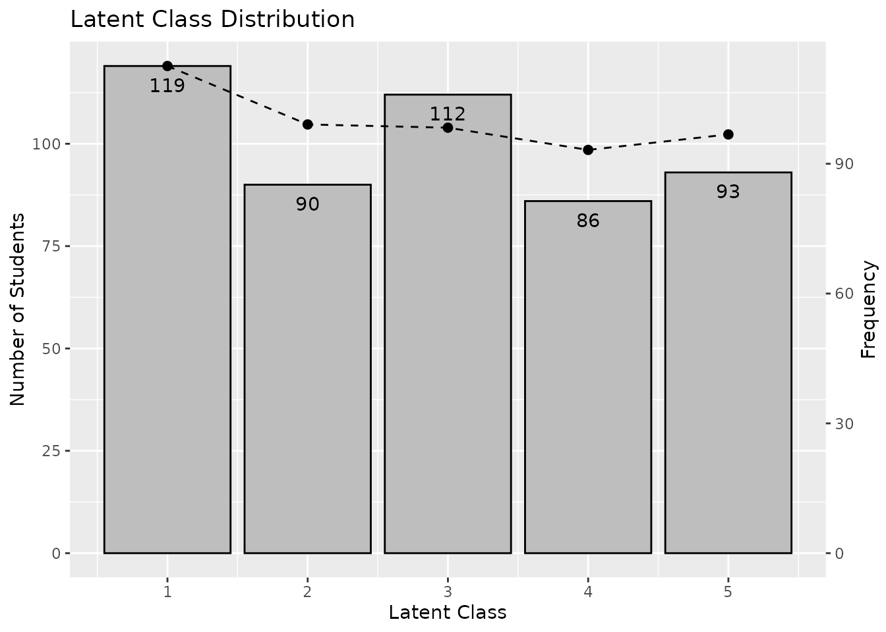

This function takes exametrika output as input and generates a Latent Class Distribution (LCD) plot using ggplot2. LCD shows the number of students in each latent class and the class membership distribution.
Usage
plotLCD_gg(
data,
Num_Students = TRUE,
title = TRUE,
colors = NULL,
linetype = "dashed",
show_legend = FALSE,
legend_position = "right"
)Arguments
- data
An object of class
c("exametrika", "LCA")orc("exametrika", "BINET"). If LRA or Biclustering output is provided, LRD will be plotted instead with a warning.- Num_Students
Logical. If
TRUE(default), display the number of students on each bar.- title
Logical or character. If
TRUE(default), display the auto-generated title. IfFALSE, no title. If a character string, use it as a custom title.- colors
Character vector of length 2. First element is the bar fill color, second is the line/point color. If
NULL(default), uses gray for bars and black for line/points.- linetype
Character or numeric specifying the line type for the frequency line. Default is
"dashed".- show_legend
Logical. If
TRUE, display the legend. Default isFALSE.- legend_position
Character. Position of the legend. One of
"right"(default),"top","bottom","left","none".
Value
A single ggplot object with dual y-axes showing both the student count and membership frequency.
Details
The Latent Class Distribution shows how students are distributed across latent classes. The bar graph shows the number of students assigned to each class, and the line graph shows the cumulative class membership distribution.
Examples
library(exametrika)
result <- LCA(J15S500, ncls = 5)
#>
iter 1 log_lik -3920.06
#>
iter 2 log_lik -3868.38
#>
iter 3 log_lik -3856.57
#>
iter 4 log_lik -3845.74
#>
iter 5 log_lik -3833.37
#>
iter 6 log_lik -3820.23
#>
iter 7 log_lik -3806.72
#>
iter 8 log_lik -3792.97
#>
iter 9 log_lik -3779.19
#>
iter 10 log_lik -3765.86
#>
iter 11 log_lik -3753.64
#>
iter 12 log_lik -3743.12
#>
iter 13 log_lik -3734.56
#>
iter 14 log_lik -3727.88
#>
iter 15 log_lik -3722.77
#>
iter 16 log_lik -3718.86
#>
iter 17 log_lik -3715.8
#>
iter 18 log_lik -3713.3
#>
iter 19 log_lik -3711.18
#>
iter 20 log_lik -3709.29
#>
iter 21 log_lik -3707.55
#>
iter 22 log_lik -3705.91
#>
iter 23 log_lik -3704.34
#>
iter 24 log_lik -3702.83
#>
iter 25 log_lik -3701.39
#>
iter 26 log_lik -3699.99
#>
iter 27 log_lik -3698.66
#>
iter 28 log_lik -3697.39
#>
iter 29 log_lik -3696.18
#>
iter 30 log_lik -3695.02
#>
iter 31 log_lik -3693.92
#>
iter 32 log_lik -3692.86
#>
iter 33 log_lik -3691.86
#>
iter 34 log_lik -3690.89
#>
iter 35 log_lik -3689.96
#>
iter 36 log_lik -3689.06
#>
iter 37 log_lik -3688.17
#>
iter 38 log_lik -3687.31
#>
iter 39 log_lik -3686.45
#>
iter 40 log_lik -3685.61
#>
iter 41 log_lik -3684.76
#>
iter 42 log_lik -3683.91
#>
iter 43 log_lik -3683.07
#>
iter 44 log_lik -3682.22
#>
iter 45 log_lik -3681.37
#>
iter 46 log_lik -3680.53
#>
iter 47 log_lik -3679.69
#>
iter 48 log_lik -3678.86
#>
iter 49 log_lik -3678.05
#>
iter 50 log_lik -3677.25
#>
iter 51 log_lik -3676.47
#>
iter 52 log_lik -3675.71
#>
iter 53 log_lik -3674.97
#>
iter 54 log_lik -3674.26
#>
iter 55 log_lik -3673.57
#>
iter 56 log_lik -3672.9
#>
iter 57 log_lik -3672.24
#>
iter 58 log_lik -3671.61
#>
iter 59 log_lik -3670.99
#>
iter 60 log_lik -3670.38
#>
iter 61 log_lik -3669.79
#>
iter 62 log_lik -3669.21
#>
iter 63 log_lik -3668.64
#>
iter 64 log_lik -3668.09
#>
iter 65 log_lik -3667.55
#>
iter 66 log_lik -3667.03
#>
iter 67 log_lik -3666.53
#>
iter 68 log_lik -3666.05
#>
iter 69 log_lik -3665.59
#>
iter 70 log_lik -3665.15
#>
iter 71 log_lik -3664.74
#>
iter 72 log_lik -3664.35
#>
iter 73 log_lik -3663.99
plot <- plotLCD_gg(result)
plot
